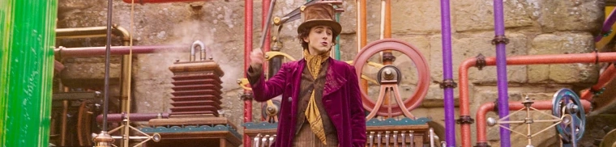
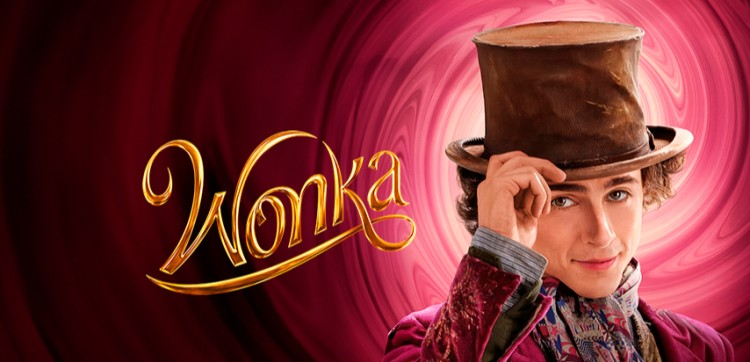
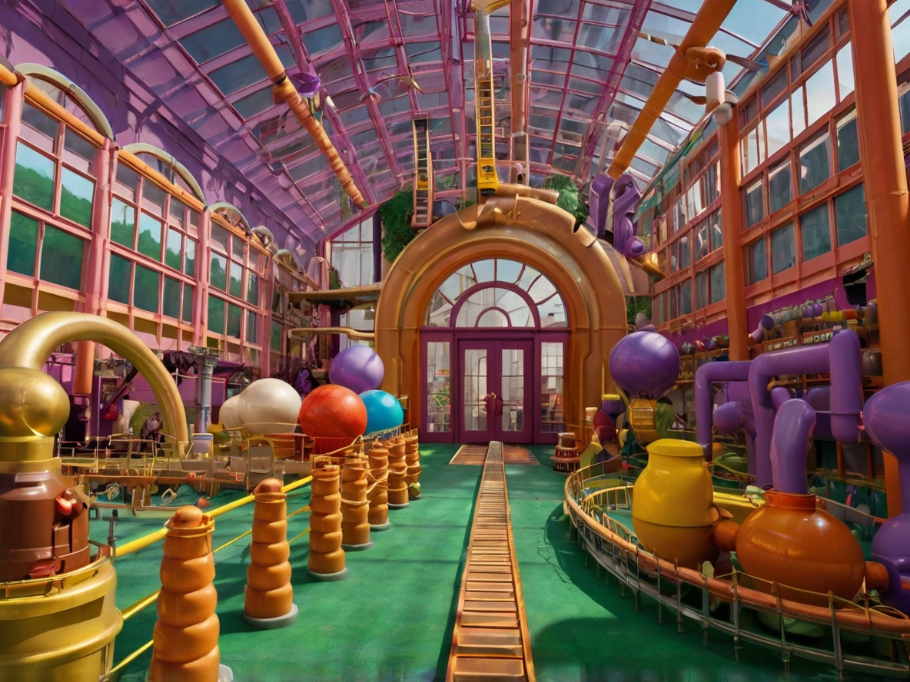
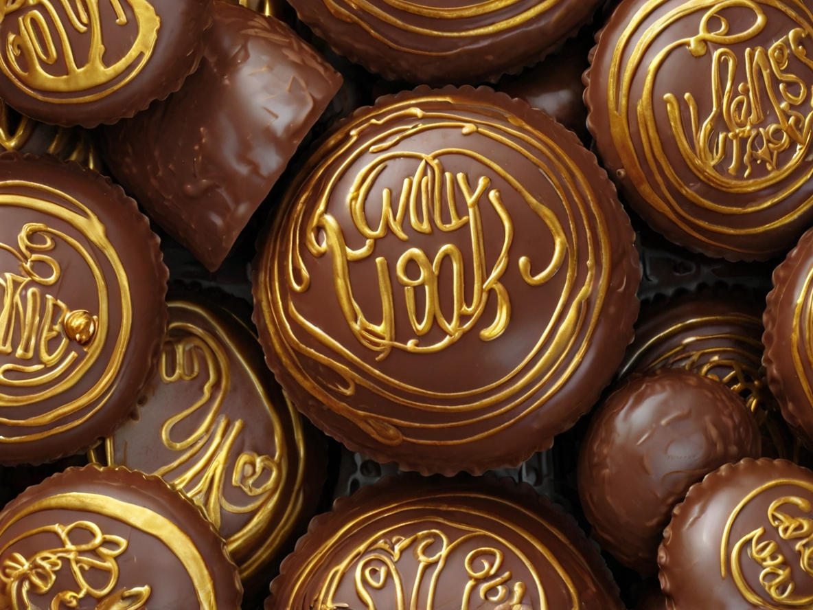

Willy Wonka é conhecido por seu comportamento peculiar e sua aparência distintiva, frequentemente descrita como excêntrica. Ele é um inventor genial com uma mente brilhante e criativa, responsável por criar algumas das guloseimas mais incríveis e inovadoras do mundo. Entre suas criações estão os famosos chocolates que nunca derretem, os caramelos que mudam de cor e os chicles que duram para sempre. Sua fábrica é um lugar mágico, cheio de surpresas e maravilhas que capturam a imaginação de todos que a visitam.

A fábrica de chocolates de Willy Wonka é um lugar mágico e cheio de mistérios, repleto de engenhocas e invenções extraordinárias.
A fábrica, que esteve fechada para o público por muitos anos, reabriu suas portas para um grupo seleto de crianças sortudas que encontraram os bilhetes dourados escondidos em barras de chocolate Wonka.
Por dentro, a fábrica de chocolates de Willy Wonka é um verdadeiro país das maravilhas. Cada sala apresenta uma nova surpresa, combinando tecnologia avançada com uma imaginação exuberante.
Alguns dos destaques incluem:
O Rio de Chocolate:
Um rio de chocolate derretido que atravessa uma paisagem pitoresca, completo com cachoeiras de chocolate.
O Jardim Comestível:
Uma sala onde tudo é feito de doces, incluindo flores, árvores e até a grama.
A Sala de Invenções:
Onde Willy Wonka cria suas novas e excitantes guloseimas, como o chiclete de três refeições e os doces que nunca acabam.
O Elevador de Vidro:
Um elevador que se move em todas as direções, não apenas para cima e para baixo, oferecendo uma visão panorâmica das maravilhas da fábrica.
A fábrica é operada pelos Oompa-Loompas, pequenos seres que Willy Wonka trouxe da distante Loompalândia. Eles são trabalhadores leais e dedicados, ajudando a manter a fábrica funcionando perfeitamente. Os Oompa-Loompas também são conhecidos por suas canções e danças, que frequentemente contêm lições morais para as crianças visitantes.
A fábrica de Willy Wonka é conhecida por seus produtos únicos e inovadores, muitos dos quais desafiam as leis da física e da química.

A fábrica de chocolates de Willy Wonka é conhecida mundialmente pelas suas criações mágicas e inovadoras, que não só encantam o paladar, mas também a imaginação de quem os consome. A genialidade de Willy Wonka está presente em cada detalhe dos seus chocolates, transformando simples doces em experiências extraordinárias.

Na pequena vila de Serenidade, o inventor excêntrico Sr. Almeida descobriu, por acaso, uma receita mágica de chocolate. Misturando ingredientes raros e um toque de pó de estrela, criou o ChocoLevita. Ao dar a primeira mordida, sentiu os pés levantarem suavemente do chão. Batizou-o de "Levita com Leveza" e partilhou a delícia com a vila. Desde então, cada mordida de ChocoLevita proporcionava a sensação de flutuar, oferecendo um pequeno impulso de alegria a quem precisasse.

Na antiga cidade de Mistério, o alquimista Hugo descobriu, por acidente, uma fórmula secreta enquanto experimentava com cacau e ervas mágicas. Ao provar a mistura, ele desapareceu por completo! Surpreso, Hugo aperfeiçoou a receita e criou o CacauCamufla, um chocolate que proporcionava invisibilidade instantânea. Batizou-o de "Invisibilidade Instantânea" e começou a vendê-lo na sua loja. Agora, os amantes de truques de magia podem desfrutar de um doce desaparecimento e surpreender os seus amigos.

Na pacata aldeia de Sonolândia, a herborista Ana estava determinada a ajudar os moradores que sofriam de insônia. Após inúmeras tentativas, ela misturou cacau com ervas relaxantes e mel de flores noturnas, criando o DoceDormir. Ao provar o chocolate, Ana adormeceu imediatamente e teve sonhos maravilhosos. Encantada, começou a distribuir o DoceDormir, garantindo "Sonhos Doces Garantidos" a todos que precisavam de uma noite de descanso profundo.

No laboratório de um cientista chamado Dr. Marcelo, uma experiência comum tornou-se extraordinária. Enquanto pesquisava os efeitos da menta na função cerebral, ele descobriu uma combinação única com cacau. Ao testar o chocolate resultante, percebeu que sua capacidade de memorização aumentou drasticamente. Dr. Marcelo chamou o chocolate de "MemóriaMenta" e logo o ofereceu aos estudantes e profissionais que buscavam um impulso na memória. Assim, nasceu um chocolate que não só deliciava, mas também potencializava a mente.

Numa pequena confeitaria da cidade, a chocolatier Sofia estava sempre em busca de criar algo único. Um dia, enquanto misturava ingredientes, ela adicionou uma pitada de pó de riso, um composto secreto encontrado nas montanhas distantes. Ao experimentar o chocolate que tinha acabado de fazer, ela não conseguiu parar de rir. Então nasceu o RisoRápido, um chocolate que, com cada quadrado, espalhava uma onda de riso contagiante. Desde então, o RisoRápido tornou-se um sucesso nas festas, animando todos os presentes com a sua alegria deliciosa e inesperada.

Numa tarde chuvosa de outono, a chocolatier Maria estava experimentando novos sabores na sua pequena cozinha. Misturando ingredientes incomuns, como flor de laranjeira e um toque de mel das montanhas, ela criou o EuforiaEclética. Ao provar o chocolate pela primeira vez, Maria sentiu uma onda de felicidade e bem-estar que a elevou ao topo do mundo. Decidida a compartilhar essa experiência única, ela começou a oferecer o EuforiaEclética na sua loja, proporcionando a todos uma sensação de alegria intensa em cada mordida.

Numa tarde tranquila, o chocolatier Carlos estava inspirado pela nostalgia dos seus álbuns de fotografias. Decidiu criar algo que capturasse não só o sabor, mas também a sensação de momentos passados. Combinando chocolate amargo com um toque de baunilha, ele criou a TempoTrufa. Ao experimentar a primeira trufa, Carlos foi transportado de volta a um dia ensolarado da sua infância. Compartilhando essa experiência emocionante, ele ofereceu a TempoTrufa na sua loja, permitindo aos clientes reviverem breves instantes de felicidade ao saborear cada mordida.

Num estúdio de música peculiar, o chocolatier Miguel combinava ingredientes enquanto ouvia suas músicas favoritas. Um dia, ele adicionou uma essência especial de frutas silvestres e mel, inspirado pela harmonia das melodias. Ao provar o chocolate que acabara de criar, Miguel sentiu como se notas musicais dançassem na sua boca. Assim nasceu o SaborSonoro, um chocolate que oferecia uma experiência auditiva única a cada mordida. Desde então, tornou-se um favorito entre os amantes de música, proporcionando novas melodias a todos que o experimentavam.

Num laboratório escondido no topo de uma montanha, o cientista João estava obcecado com a ideia de aumentar a capacidade física humana. Depois de anos de pesquisa, ele descobriu uma fórmula revolucionária misturando cacau puro com extrato de semente de pepita. Ao provar o chocolate resultante, João sentiu uma energia explosiva percorrer o seu corpo e deu um salto tão alto que quase tocou as estrelas. Ele batizou esse chocolate de "PuloPepita", que concedia a habilidade de saltar como nunca antes por um tempo limitado. Desde então, o PuloPepita tem sido usado por atletas e aventureiros para alcançar novas alturas e desafiar os limites do possível.

Numa noite tempestuosa, o chocolatier Pedro trabalhava na sua pequena fábrica, quando um relâmpago atingiu o telhado. O impacto fez com que um frasco de um misterioso pó de cacau caísse numa mistura especial que ele estava preparando. Ao provar o chocolate resultante, Pedro sentiu uma energia imensa percorrer o seu corpo, dando-lhe uma força sobre-humana temporária. Batizou esse chocolate de "ForçaFondue" e decidiu compartilhar essa descoberta com o mundo. Desde então, o ForçaFondue tem sido procurado por aqueles que precisam de uma dose extra de coragem e vigor para enfrentar qualquer desafio.

Numa biblioteca antiga, a bibliotecária Sofia descobriu um antigo livro de feitiços esquecido. Curiosa, ela experimentou uma poção mencionada nas páginas amareladas, misturando-a com cacau e baunilha. Ao provar o chocolate que resultou da experiência, Sofia ficou surpresa ao perceber que conseguia entender e falar qualquer idioma por uma hora. Ela chamou o chocolate de "FalaFudge" e logo compartilhou sua descoberta com viajantes e curiosos linguísticos, que agora podiam expandir seus horizontes linguísticos com um simples pedaço de chocolate.

Numa manhã de primavera, a jardineira Mariana estava cuidando do seu jardim quando derramou acidentalmente um frasco de essência de girassol num lote de chocolate que estava preparando. Ao provar o chocolate resultante, Mariana sentiu uma energia renovadora e, para sua surpresa, pequenas flores começaram a brotar ao longo do seu caminho. Ela chamou esse chocolate de "GirassolGourmet", pois transformava qualquer lugar num jardim florido enquanto o comia. Desde então, o GirassolGourmet tem sido apreciado por aqueles que desejam espalhar beleza e alegria por onde passam.